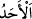
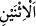

ve Cumartesi gününden söz etmiştir. Araplar gün adlarının mânâlarını ehl-i kitaptan
almışlar ve onlara uyarak bu adları o günlere vermişlerdir. Günleri (
) Pazar, (
)
Pazartesi… olarak adlandıran Hz. Peygamber değildir; onun yaptığı kendi milletinin
kullanışına göre hareket etmekten ibarettir.”
es-Seb’iyyât’ta şöyle geçer: Allah Teâlâ Cumartesi’yi Mûsâ (a.s.)’a, Pazar’ı Îsâ
Aleyhisselâm’a, Pazartesi’yi Dâvûd (a.s.)’a, Salı’yı Süleyman (a.s.)’a, Çarşamba’yı
Yâkup (a.s.)’a, Perşembe’yi Âdem (a.s.)’a ve Cuma’yı Muhammed (a.s.)’a ikrâm
etmiştir.
Bu ifâde, Cumartesi’yi Yahudilerin, Pazarı da Hıristiyanların bizzat kendilerinin
tercih etmediğini gösterir. Bunu, herkesin iyi düşünüp anlaması gerekir.
Hz. Peygamber’den Cumartesi günü hakkında bilgi istendiği zaman, “hîle-hud’a
günüdür”[16] demiş. Çünkü Kureyş kabîlesinin kendisiyle ilgili karârı almak üzere
Dârunnedve’de istişâre ettiği gün Cumartesi idi. Pazar günü hakkında bilgi istendiği
zaman, “yeşertme ve imar günüdür”[17] buyurmuştur. Çünkü Allah dünyayı yaratmaya
ve imar etmeye o gün başlamıştır. Pazartesi günü hakkında bilgi istendiği zaman, “sefer
ve ticaret(e çıkış) günüdür”[18] buyurmuş. Çünkü Şuayb (a.s.) sefere o gün çıkmış ve
müthiş kâr etmişti. Salı günü hakkında bilgi istendiği zaman, “kan günüdür”[19]
buyurmuş; çünkü Havvâ vâlidemiz ilk kez o gün hayız görmüş, Âdem’in oğlu kardeşini
o gün katletmiş, Cercîs, Zekeriyyâ, oğlu Yahyâ (a.s.), Firavun’un büyücüleri ile hanımı
Âsiye binti Muzâhim ve İsrâiloğullarının ineği o gün katledilmiştir. Hz. Peygamberin
“O günde öyle bir saat vardır ki o saatte kan akmaz”[20] buyurarak Salı günü hacamat
yaptırmayı/kan aldırmayı şiddetle yasaklamasının sebebi de budur. İblis Arz’a bu gün
indiği gibi, Cehennem de bu gün yaratılmıştır; Allah ölüm meleğini Âdemoğullarının
ruhlarına bu gün musallat etmiş, Eyyûb (a.s.) o hastalığa bu gün –bazı rivâyetlere göre
ise Çarşamba günü- yakalanmıştır. Ravzatü’l-ahbâr’da der ki: Ebu Hanîfe zamanında
kıraatte tatil günü Cumartesi günüydü; o gün bir şey okunmazdı; Hassâf’ın zamanında
ise, bu zât Pazartesi ve Salı günleri arasında tereddüt etti. Hz. Peygamber’den
Çarşamba günü hakkında bilgi istendiği zaman, “uğursuzluk günüdür”[21] buyurmuş;
çünkü Firavun ve kavmi bu gün boğulduğu gibi, Âd, Sâlih (a.s.)’ın kavmi Semûd de bu
gün helâk edilmiştir. Ayın son Çarşambası, çok daha uğursuzdur. “Çarşamba günü alış-
veriş yapılmamalıdır”[22] diye bir söz rivâyet edilir. Çarşamba günü tırnak kesmeyi
yasaklayan ve bunun alaca hastalığına yol açacağını belirten rivâyetler vardır.[23] Bazı
âlimler bu konuda tereddüt etmiş ve – Allah’a sığınırız - bu hastalığa dûçâr
edilmişlerdir. Bir hadiste: “Cüzzam ve alaca hastalıkları ancak Çarşamba günü
çıkar”[24] denilmektedir. Hatta bazıları bu gün hasta ziyaretini bile hoş karşılamamıştır.
Ancak bu gün yıkanmak iyi görülmüştür. Bu gün zeval vaktinden sonra, ikindiden evvel
edilen duâlara icâbet edilir. Nitekim Hz. Peygamberin düşman birlikleri (ahzâb)
aleyhinde bu vakitte ettiği duâ kabul edilmiştir. Medine’de bu duânın edildiği yere bir